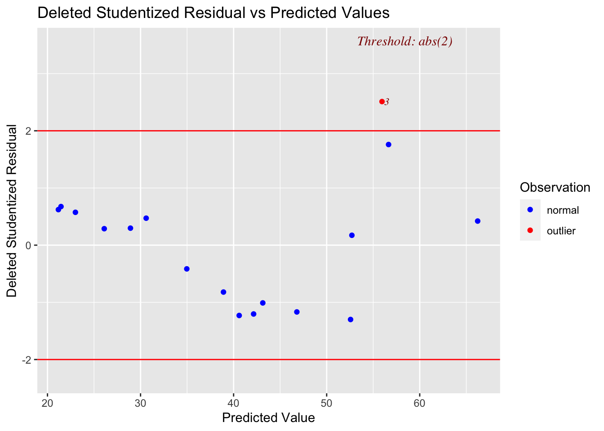

library(usethis) # use_github_file
library(tidyverse) # read_csv()
library(janitor) # clean_names()
library(skimr) # skim()
library(tidymodels) #tidy() glance()
library(survey) 8 Independence
8.1 Required packages
The following CRAN packages must be installed:
| Required CRAN Packages |
|---|
| tidyverse |
| usethis |
| janitor |
| skimr |
| tidymodels |
| survey |
| olsrr |
| car |
| prais |
| gee |
8.2 Page 140 Independence/Dependence with Means
8.2.1 Obtain data and save it to your computer
use_github_file(repo_spec = "https://github.com/johnhoffmannVA/LinearRegression/blob/main/MultiLevel.csv",
save_as = "data_multilevel.csv")8.2.2 Load data from your computer
data_multilevel <- read_csv("data_multilevel.csv") %>%
clean_names()8.2.3 Inspect data
data_multilevel %>%
glimpse() Rows: 9,859
Columns: 14
$ idcomm <dbl> 25, 25, 25, 25, 25, 25, 25, 25, 25, 25, 25, 25, 25, 25, 2…
$ id <dbl> 10001, 10004, 10005, 10008, 10009, 10012, 10013, 10015, 1…
$ male <chr> "female", "female", "male", "female", "male", "female", "…
$ white <chr> "white", "white", "white", "white", "white", "white", "wh…
$ married <chr> "no", "yes", "yes", "no", "yes", "no", "yes", "no", "yes"…
$ age <dbl> 42, 68, 58, 37, 64, 69, 33, 74, 41, 47, 41, 56, 33, 71, 5…
$ educate <dbl> 5, 3, 3, 5, 4, 3, 3, 6, 6, 3, 3, 4, 6, 3, 4, 3, 4, 7, 3, …
$ income <dbl> 2, 4, 3, 2, 8, 3, 6, 3, 7, 2, 4, 4, 6, 7, 6, 8, 4, 4, 4, …
$ commlength <dbl> 42, 50, 50, 5, 30, 69, 9, 30, 11, 8, 30, 5, 2, 71, 25, 2,…
$ commtrust <dbl> 0.349, -0.434, -1.546, -0.707, -0.264, 0.465, -0.596, 0.5…
$ trust <chr> "not_high", "not_high", "not_high", "not_high", "not_high…
$ pop2020 <dbl> 917, 917, 917, 917, 917, 917, 917, 917, 917, 917, 917, 91…
$ relighomog <dbl> 0.277, 0.277, 0.277, 0.277, 0.277, 0.277, 0.277, 0.277, 0…
$ disadvantage <dbl> -1.219, -1.219, -1.219, -1.219, -1.219, -1.219, -1.219, -…8.2.4 View data
Remember you can always use the view() command in R to see the data in a spreadsheet:
view(data_multilevel)8.2.5 Specify Design
We indicate town is a grouping variable (idcomm which I think stands for id community).
clus_multilevel <- svydesign(ids = ~idcomm,
data = data_multilevel)Warning in svydesign.default(ids = ~idcomm, data = data_multilevel): No weights
or probabilities supplied, assuming equal probabilitysummary(clus_multilevel)1 - level Cluster Sampling design (with replacement)
With (99) clusters.
svydesign(ids = ~idcomm, data = data_multilevel)
Probabilities:
Min. 1st Qu. Median Mean 3rd Qu. Max.
1 1 1 1 1 1
Data variables:
[1] "idcomm" "id" "male" "white" "married"
[6] "age" "educate" "income" "commlength" "commtrust"
[11] "trust" "pop2020" "relighomog" "disadvantage"8.2.6 Calculate Mean/SE
In the calculation we below we us the is.na() command. This provides a vector of TRUE/FALSE non-missing values. TRUE indicates missing. We using an exclamation mark in from to the INVERT the TRUE/FALSE. That means, TRUE indicates NOT missing after we using the exclamation mark. Then we use the sum() command to add up the TRUEs. Each TRUE counts as 1 so this provides us with a count of non-missing values. We could have used the n() command but this doesn’t know if there are missing values and can produce incorrect results.
data_multilevel %>%
summarise(n = sum(!is.na(commlength)),
mean = mean(commlength),
SD= sd(commlength),
SE = SD/sqrt(n)) %>%
as.data.frame() n mean SD SE
1 9859 33.25885 22.44965 0.2260962Consider the SE calculation here. It is the usual one.
\[ SE = \frac{SD}{\sqrt{n}}= \frac{22.44965}{\sqrt{9859}} = 0.2260962 \]
8.2.7 Calculate Mean/SE Incorporting Cluster Dependence
svymean(~commlength,
design = clus_multilevel) mean SE
commlength 33.259 0.5297Notice how the SE is much larger when clustering is taken into account. When the clusters are taken into account it means that we realize that within a clusters each person does not provide information independent of the other people. So from a statistical perspective this makes the effective sample size smaller when calculating SE. In this data set the 9859 people (with dependence due to clusters) are equivalent to 1796.219 independent people - see the calculation below. Note though this is not the actual calculation “under the hood”, it is just a means of illustrating what we are compensating for when we take clusters into account. The lower effective sample size (due to a lack of independence) results in a larger Standard Error (0.5297 vs 0.2261).
\[ SE = \frac{SD}{\sqrt{n}}= \frac{22.44965}{\sqrt{1796.219}} = 0.5296999 \]
8.3 Page 142 Independence/Dependence with Regression
8.3.1 Regular Regression No Adjustment
lm8_1 <- lm(income ~ male + married,
data = data_multilevel)tidy(lm8_1)| term | estimate | std.error | statistic | p.value |
|---|---|---|---|---|
| (Intercept) | 2.9309727 | 0.0363492 | 80.63368 | 0 |
| malemale | 0.5187255 | 0.0394160 | 13.16028 | 0 |
| marriedyes | 1.7475797 | 0.0422214 | 41.39084 | 0 |
confint(lm8_1) 2.5 % 97.5 %
(Intercept) 2.8597208 3.0022247
malemale 0.4414621 0.5959889
marriedyes 1.6648171 1.8303423glance(lm8_1)| r.squared | adj.r.squared | sigma | statistic | p.value | df | logLik | AIC | BIC | deviance | df.residual | nobs |
|---|---|---|---|---|---|---|---|---|---|---|---|
| 0.1810082 | 0.180842 | 1.908896 | 1089.154 | 0 | 2 | -20361.91 | 40731.81 | 40760.6 | 35914.12 | 9856 | 9859 |
8.3.2 Dependence Adjusted Regression
clus_multilevel <- svydesign(ids = ~idcomm,
data = data_multilevel)Warning in svydesign.default(ids = ~idcomm, data = data_multilevel): No weights
or probabilities supplied, assuming equal probabilitysummary(clus_multilevel)1 - level Cluster Sampling design (with replacement)
With (99) clusters.
svydesign(ids = ~idcomm, data = data_multilevel)
Probabilities:
Min. 1st Qu. Median Mean 3rd Qu. Max.
1 1 1 1 1 1
Data variables:
[1] "idcomm" "id" "male" "white" "married"
[6] "age" "educate" "income" "commlength" "commtrust"
[11] "trust" "pop2020" "relighomog" "disadvantage"lm8_2 <- svyglm(income ~ male + married,
design = clus_multilevel)tidy(lm8_2)| term | estimate | std.error | statistic | p.value |
|---|---|---|---|---|
| (Intercept) | 2.9309727 | 0.0406152 | 72.16442 | 0 |
| malemale | 0.5187255 | 0.0420681 | 12.33060 | 0 |
| marriedyes | 1.7475797 | 0.0441621 | 39.57192 | 0 |
confint(lm8_2) 2.5 % 97.5 %
(Intercept) 2.8503522 3.0115933
malemale 0.4352209 0.6022301
marriedyes 1.6599186 1.8352408glance(lm8_2)| null.deviance | df.null | AIC | BIC | deviance | df.residual | nobs |
|---|---|---|---|---|---|---|
| 43851.62 | 9858 | 11183.24 | 35941.71 | 35914.12 | 96 | 9859 |
8.3.3 Comparing results
In the two outputs below notice the standard error is higher in the Dependence Adjusted results. This follows the same principle as when we dealt with means: when dependence is taken into account the standard error is larger. This correspondingly affects p-values - making them larger (further from 0) but more accurate.
8.3.3.1 Regular regression - see SE for weights
tidy(lm8_1)| term | estimate | std.error | statistic | p.value |
|---|---|---|---|---|
| (Intercept) | 2.9309727 | 0.0363492 | 80.63368 | 0 |
| malemale | 0.5187255 | 0.0394160 | 13.16028 | 0 |
| marriedyes | 1.7475797 | 0.0422214 | 41.39084 | 0 |
8.3.3.2 Dependence Adjusted - see SE for weights
tidy(lm8_2)| term | estimate | std.error | statistic | p.value |
|---|---|---|---|---|
| (Intercept) | 2.9309727 | 0.0406152 | 72.16442 | 0 |
| malemale | 0.5187255 | 0.0420681 | 12.33060 | 0 |
| marriedyes | 1.7475797 | 0.0441621 | 39.57192 | 0 |
8.4 Page 145 Serial Correlation
8.4.1 Obtain data and save it to your computer
use_github_file(repo_spec = "https://github.com/johnhoffmannVA/LinearRegression/blob/main/Colombia2000_16.csv",
save_as = "columbia.csv")8.4.2 Load data from your computer
columbia <- read_csv("columbia.csv") %>%
clean_names()8.4.3 Inspect data
columbia %>%
glimpse() Rows: 17
Columns: 9
$ index <dbl> 1, 2, 3, 4, 5, 6, 7, 8, 9, 10, 11, 12, 13, 14, 15, 16, 17
$ year <dbl> 2000, 2001, 2002, 2003, 2004, 2005, 2006, 2007, 2008, 20…
$ homicide_rate <dbl> 66.5, 68.6, 68.9, 53.8, 44.8, 39.6, 36.8, 34.7, 33.0, 33…
$ homicides <dbl> 26540, 27840, 28387, 22526, 19036, 17086, 16119, 15423, …
$ population <dbl> 39.64, 40.26, 40.88, 41.48, 42.08, 42.65, 43.20, 43.74, …
$ unemploy <dbl> 20.52, 15.04, 15.63, 14.19, 13.72, 11.87, 11.51, 11.20, …
$ poverty <dbl> 53.7, 60.5, 53.2, 50.9, 50.8, 46.7, 44.1, 43.4, 42.3, 41…
$ gni <dbl> 2340, 2330, 2370, 2370, 2620, 2990, 3500, 4120, 4700, 51…
$ education <dbl> 6.50, 6.50, 6.60, 6.65, 6.75, 6.00, 6.90, 7.00, 7.10, 7.…8.4.4 View data
Remember you can always use the view() command in R to see the data in a spreadsheet:
view(columbia)8.4.5 Regular Regression
lm8_3 <- lm(homicide_rate ~ poverty,
data=columbia)tidy(lm8_3)| term | estimate | std.error | statistic | p.value |
|---|---|---|---|---|
| (Intercept) | -18.955563 | 7.1414543 | -2.654300 | 0.0180357 |
| poverty | 1.407943 | 0.1660531 | 8.478867 | 0.0000004 |
confint(lm8_3) 2.5 % 97.5 %
(Intercept) -34.177213 -3.733914
poverty 1.054009 1.761876glance(lm8_3)| r.squared | adj.r.squared | sigma | statistic | p.value | df | logLik | AIC | BIC | deviance | df.residual | nobs |
|---|---|---|---|---|---|---|---|---|---|---|---|
| 0.8273703 | 0.8158617 | 6.479184 | 71.89119 | 4e-07 | 1 | -54.82418 | 115.6484 | 118.148 | 629.6975 | 15 | 17 |
8.4.5.1 Check Autocorrelation of Residuals
library(olsrr)
# Deleted studentized residual vs fitted values plot
ols_plot_resid_stud_fit(lm8_3)
Obtain the residuals using the augment() command from the broom package. The residuals are in the .resid column.
augment(lm8_3)| homicide_rate | poverty | .fitted | .resid | .hat | .sigma | .cooksd | .std.resid |
|---|---|---|---|---|---|---|---|
| 66.5 | 53.7 | 56.65095 | 9.849052 | 0.1494618 | 6.068935 | 0.2387046 | 1.6482656 |
| 68.6 | 60.5 | 66.22496 | 2.375043 | 0.2847689 | 6.664462 | 0.0374001 | 0.4334390 |
| 68.9 | 53.2 | 55.94698 | 12.953024 | 0.1419102 | 5.568849 | 0.3851410 | 2.1581640 |
| 53.8 | 50.9 | 52.70871 | 1.091291 | 0.1114027 | 6.699452 | 0.0020012 | 0.1786767 |
| 44.8 | 50.8 | 52.56791 | -7.767915 | 0.1102340 | 6.335170 | 0.1000696 | -1.2710019 |
| 39.6 | 46.7 | 46.79535 | -7.195350 | 0.0736249 | 6.402063 | 0.0529035 | -1.1538203 |
| 36.8 | 44.1 | 43.13470 | -6.334700 | 0.0618514 | 6.474805 | 0.0335883 | -1.0094153 |
| 34.7 | 43.4 | 42.14914 | -7.449140 | 0.0601989 | 6.384431 | 0.0450462 | -1.1859540 |
| 33.0 | 42.3 | 40.60040 | -7.600404 | 0.0589026 | 6.371341 | 0.0457581 | -1.2092025 |
| 33.7 | 41.1 | 38.91087 | -5.210873 | 0.0593014 | 6.551077 | 0.0216727 | -0.8292106 |
| 32.3 | 38.3 | 34.96863 | -2.668634 | 0.0675883 | 6.665796 | 0.0065942 | -0.4265449 |
| 33.6 | 35.2 | 30.60401 | 2.995988 | 0.0887765 | 6.653930 | 0.0114303 | 0.4844035 |
| 30.8 | 34.0 | 28.91448 | 1.885519 | 0.1003676 | 6.685516 | 0.0052512 | 0.3068160 |
| 27.9 | 32.0 | 26.09860 | 1.801404 | 0.1238899 | 6.686840 | 0.0062384 | 0.2970376 |
| 26.5 | 29.8 | 23.00112 | 3.498877 | 0.1558335 | 6.628916 | 0.0318854 | 0.5877523 |
| 25.5 | 28.7 | 21.45239 | 4.047614 | 0.1741896 | 6.600100 | 0.0498413 | 0.6874460 |
| 24.9 | 28.5 | 21.17080 | 3.729203 | 0.1776978 | 6.615918 | 0.0435292 | 0.6347167 |
We can calculate the Durbin-Watson test statistic with the formula below. But that notation can be hard to understand.
\[ d = \frac{\sum\limits_{ti=2}^n(\epsilon_{ti}-\epsilon_{ti-1})^2}{\sum\limits_{ti=1}^n\epsilon_{ti}^2} \]
Let’s consider the numerator first. Look the values in the .resid column and see how they are used.
\[ \begin{aligned} \sum\limits_{ti=2}^n(\epsilon_{ti}-\epsilon_{ti-1})^2 &= (2.375043 - 9.849052)^2 + (12.953023-2.375043)^2 + (1.091291-12.953023)^2 + ... + (3.729203 - 4.047614) ^2\\ &= 438.059 \end{aligned} \]
Now the denominator:
\[ \begin{aligned} \sum\limits_{ti=1}^n\epsilon_{ti}^2 &= 9.849052^2 + 2.375043^2 + 12.953023^2 + ... + 3.729203^2\\ &= 629.6975 \end{aligned} \]
We combine them to get the final Durbin-Watson statistic:
\[ d = \frac{\sum\limits_{ti=2}^n(\epsilon_{ti}-\epsilon_{ti-1})^2}{\sum\limits_{ti=1}^n\epsilon_{ti}^2} = \frac{438.059}{629.6975} = 0.6956658 \]
Compare this to the output:
library(car)Loading required package: carData
Attaching package: 'car'The following object is masked from 'package:dplyr':
recodeThe following object is masked from 'package:purrr':
somedurbinWatsonTest(lm8_3) lag Autocorrelation D-W Statistic p-value
1 0.5641004 0.6956658 0
Alternative hypothesis: rho != 0This output also contains an autocorrelation value. It is calculated using the formula below. Not this is the formula used by R. The formula in the text book on p. 149 Footnote 10 is not used by the R durbinWatsonTest() command.
\[ r = \frac{\sum\limits_{ti=2}^n\epsilon_{ti}\epsilon_{ti-1}}{\sum\limits_{ti=1}^n\epsilon_{ti}^2} = 0.5641004 \]
Autocorrelation of residuals is a way of determining if the independence of rows assumption for regression is true. The autocorrelation of residuals is a way of examining if the residuals at one time are related to the residuals at the next time. If the two are unrelated then the rows are independent - and the regression assumption is true. Alternatively, if the residuals at one time are related to residuals at the next time - then the rows are dependent - and the regression assumption is violated.
Consider the table below. The first column on the left is the original residuals. The second column on the right is the residuals shifted by one spot (i.e., a lag of 1 time period). Autocorrelation of residuals checks to see if these two columns are correlated. If the residuals are correlated (i.e., the columns below are correlated) this indicates the errors at one time are related to the errors at another time. That is, the errors on one row are related to the errors on another row. If this is true, the rows are not independent of each other and the regression assumption is violated.
The textbook autcorrelation formula would give you the actual correlation between the two columns below which is .62. For technical reasons R actually uses a slightly different calculation formula, above, which is conceptually similar, but produces a value of 0.56.
| residuals | shifted_residuals |
|---|---|
| 9.849052 | 2.375043 |
| 2.375043 | 12.953024 |
| 12.953024 | 1.091291 |
| 1.091291 | -7.767915 |
| -7.767915 | -7.195350 |
| -7.195350 | -6.334700 |
| -6.334700 | -7.449140 |
| -7.449140 | -7.600404 |
| -7.600404 | -5.210873 |
| -5.210873 | -2.668634 |
| -2.668634 | 2.995988 |
| 2.995988 | 1.885519 |
| 1.885519 | 1.801404 |
| 1.801404 | 3.498877 |
| 3.498877 | 4.047614 |
| 4.047614 | 3.729203 |
8.5 Page 150 Corrections for dependence
8.5.1 Regular regression
lm8_4 <- lm(homicide_rate ~ poverty,
data = columbia)tidy(lm8_4)| term | estimate | std.error | statistic | p.value |
|---|---|---|---|---|
| (Intercept) | -18.955563 | 7.1414543 | -2.654300 | 0.0180357 |
| poverty | 1.407943 | 0.1660531 | 8.478867 | 0.0000004 |
confint(lm8_4) 2.5 % 97.5 %
(Intercept) -34.177213 -3.733914
poverty 1.054009 1.761876glance(lm8_4)| r.squared | adj.r.squared | sigma | statistic | p.value | df | logLik | AIC | BIC | deviance | df.residual | nobs |
|---|---|---|---|---|---|---|---|---|---|---|---|
| 0.8273703 | 0.8158617 | 6.479184 | 71.89119 | 4e-07 | 1 | -54.82418 | 115.6484 | 118.148 | 629.6975 | 15 | 17 |
8.5.2 Page Prais-Winsten Regression Model
library(prais)Loading required package: sandwichLoading required package: pcse
Attaching package: 'pcse'The following object is masked from 'package:sandwich':
vcovPClm8_5 <- prais_winsten(homicide_rate ~ poverty,
data = columbia,
index = "index")Iteration 0: rho = 0
Iteration 1: rho = 0.5768
Iteration 2: rho = 0.6171
Iteration 3: rho = 0.6288
Iteration 4: rho = 0.6328
Iteration 5: rho = 0.6342
Iteration 6: rho = 0.6348
Iteration 7: rho = 0.635
Iteration 8: rho = 0.635
Iteration 9: rho = 0.6351
Iteration 10: rho = 0.6351
Iteration 11: rho = 0.6351
Iteration 12: rho = 0.6351
Iteration 13: rho = 0.6351summary(lm8_5)
Call:
prais_winsten(formula = homicide_rate ~ poverty, data = columbia,
index = "index")
Residuals:
Min 1Q Median 3Q Max
-8.6640 -7.0686 -0.6986 0.6317 13.8862
AR(1) coefficient rho after 13 iterations: 0.6351
Coefficients:
Estimate Std. Error t value Pr(>|t|)
(Intercept) -10.1427 11.1090 -0.913 0.375674
poverty 1.2247 0.2558 4.789 0.000239 ***
---
Signif. codes: 0 '***' 0.001 '**' 0.01 '*' 0.05 '.' 0.1 ' ' 1
Residual standard error: 4.976 on 15 degrees of freedom
Multiple R-squared: 0.8019, Adjusted R-squared: 0.7887
F-statistic: 60.73 on 1 and 15 DF, p-value: 1.187e-06
Durbin-Watson statistic (original): 0.6957
Durbin-Watson statistic (transformed): 1.8738.6 Page 153 GEE for Longitudinal Data
8.6.1 Obtain data and save it to your computer
use_github_file(repo_spec = "https://github.com/johnhoffmannVA/LinearRegression/blob/main/Esteem.csv",
save_as = "data_esteem.csv")8.6.2 Load data from your computer
data_esteem <- read_csv("data_esteem.csv") %>%
clean_names()8.6.3 Inspect data
data_esteem %>%
glimpse() Rows: 5,250
Columns: 14
$ newid <dbl> 13, 13, 13, 13, 13, 13, 13, 14, 14, 14, 14, 14, 14, 14, 23,…
$ year <dbl> 1, 2, 3, 4, 5, 6, 7, 1, 2, 3, 4, 5, 6, 7, 1, 2, 3, 4, 5, 6,…
$ age <dbl> 11, 12, 13, 14, 15, 16, 17, 14, 15, 16, 17, 18, 19, 20, 14,…
$ male <chr> "male", "male", "male", "male", "male", "male", "male", "ma…
$ income <dbl> 5, 5, 5, 5, 5, 5, 5, 5, 5, 5, 5, 5, 5, 5, 3, 3, 3, 3, 3, 3,…
$ nonwhite <chr> "white", "white", "white", "white", "white", "white", "whit…
$ fstruct <chr> "yes", "yes", "yes", "yes", "yes", "yes", "yes", "yes", "ye…
$ stress <dbl> -6.84, -6.14, -3.42, -5.64, -6.28, -1.27, -0.73, -6.84, -6.…
$ cohesion <dbl> 6.88, 6.15, -9.28, -7.41, -13.57, -19.26, -21.08, -3.21, -2…
$ sattach <dbl> -6.34, -1.47, -4.35, -3.46, -8.48, -12.83, 0.14, -5.22, -10…
$ depress <dbl> -9.47, 17.51, 13.18, -1.03, -6.63, -8.76, 12.68, 0.08, -5.3…
$ esteem <dbl> -0.56, -7.19, -11.92, -6.22, -1.83, -3.54, -4.96, 1.33, 2.0…
$ mastery <dbl> 2.81, 1.91, -3.57, -1.10, -4.64, -3.99, 3.10, -2.29, -1.57,…
$ bi_depress <chr> "below", "above", "above", "below", "below", "below", "abov…8.6.4 View data
Remember you can always use the view() command in R to see the data in a spreadsheet:
view(data_esteem)head(data_esteem)# A tibble: 6 × 14
newid year age male income nonwhite fstruct stress cohesion sattach
<dbl> <dbl> <dbl> <chr> <dbl> <chr> <chr> <dbl> <dbl> <dbl>
1 13 1 11 male 5 white yes -6.84 6.88 -6.34
2 13 2 12 male 5 white yes -6.14 6.15 -1.47
3 13 3 13 male 5 white yes -3.42 -9.28 -4.35
4 13 4 14 male 5 white yes -5.64 -7.41 -3.46
5 13 5 15 male 5 white yes -6.28 -13.6 -8.48
6 13 6 16 male 5 white yes -1.27 -19.3 -12.8
# ℹ 4 more variables: depress <dbl>, esteem <dbl>, mastery <dbl>,
# bi_depress <chr>8.6.5 Just essential variables
To make things easier to follow later. We’ll select() just the columns we need:
data_esteem_working <- data_esteem %>%
select(newid, esteem, cohesion, stress)data_esteem_working %>%
glimpse() Rows: 5,250
Columns: 4
$ newid <dbl> 13, 13, 13, 13, 13, 13, 13, 14, 14, 14, 14, 14, 14, 14, 23, 2…
$ esteem <dbl> -0.56, -7.19, -11.92, -6.22, -1.83, -3.54, -4.96, 1.33, 2.03,…
$ cohesion <dbl> 6.88, 6.15, -9.28, -7.41, -13.57, -19.26, -21.08, -3.21, -2.7…
$ stress <dbl> -6.84, -6.14, -3.42, -5.64, -6.28, -1.27, -0.73, -6.84, -6.14…view(data_esteem_working)Let’s see the first 15 rows of this new data set:
head(data_esteem_working, 15)| newid | esteem | cohesion | stress |
|---|---|---|---|
| 13 | -0.56 | 6.88 | -6.84 |
| 13 | -7.19 | 6.15 | -6.14 |
| 13 | -11.92 | -9.28 | -3.42 |
| 13 | -6.22 | -7.41 | -5.64 |
| 13 | -1.83 | -13.57 | -6.28 |
| 13 | -3.54 | -19.26 | -1.27 |
| 13 | -4.96 | -21.08 | -0.73 |
| 14 | 1.33 | -3.21 | -6.84 |
| 14 | 2.03 | -2.72 | -6.14 |
| 14 | 8.89 | -10.88 | -3.42 |
| 14 | 9.41 | -9.22 | -5.64 |
| 14 | 9.14 | -7.44 | -6.28 |
| 14 | -6.33 | -12.74 | -4.04 |
| 14 | -6.46 | -11.02 | -3.53 |
| 23 | -6.93 | -14.63 | -4.47 |
8.6.6 Regular Regression
lm8_6 <- lm(esteem ~ cohesion + stress,
data = data_esteem_working)tidy(lm8_6)| term | estimate | std.error | statistic | p.value |
|---|---|---|---|---|
| (Intercept) | 0.0000029 | 0.0870514 | 0.0000332 | 0.9999735 |
| cohesion | 0.2541432 | 0.0087651 | 28.9948569 | 0.0000000 |
| stress | -0.1493022 | 0.0163233 | -9.1465813 | 0.0000000 |
confint(lm8_6) 2.5 % 97.5 %
(Intercept) -0.1706540 0.1706598
cohesion 0.2369599 0.2713264
stress -0.1813027 -0.1173018glance(lm8_6)| r.squared | adj.r.squared | sigma | statistic | p.value | df | logLik | AIC | BIC | deviance | df.residual | nobs |
|---|---|---|---|---|---|---|---|---|---|---|---|
| 0.1703517 | 0.1700355 | 6.307471 | 538.6834 | 0 | 2 | -17117.03 | 34242.07 | 34268.33 | 208747.7 | 5247 | 5250 |
8.7 Page 154 GEE Regression AR(1) Pattern
library(gee)
lm8_7 <- gee(esteem ~ cohesion + stress,
id = newid,
data = data_esteem_working,
corstr = "AR-M",
Mv = 1)Beginning Cgee S-function, @(#) geeformula.q 4.13 98/01/27running glm to get initial regression estimate (Intercept) cohesion stress
2.893874e-06 2.541432e-01 -1.493022e-01 summary(lm8_7)
GEE: GENERALIZED LINEAR MODELS FOR DEPENDENT DATA
gee S-function, version 4.13 modified 98/01/27 (1998)
Model:
Link: Identity
Variance to Mean Relation: Gaussian
Correlation Structure: AR-M , M = 1
Call:
gee(formula = esteem ~ cohesion + stress, id = newid, data = data_esteem_working,
corstr = "AR-M", Mv = 1)
Summary of Residuals:
Min 1Q Median 3Q Max
-37.895653 -4.201059 0.689138 4.918345 15.317508
Coefficients:
Estimate Naive S.E. Naive z Robust S.E. Robust z
(Intercept) 0.0000759361 0.144336853 0.0005261033 0.16303660 0.000465761
cohesion 0.2019027487 0.009271432 21.7768669671 0.01211667 16.663215493
stress -0.0710920935 0.015016134 -4.7343807014 0.01691523 -4.202845600
Estimated Scale Parameter: 40.339
Number of Iterations: 4
Working Correlation
[,1] [,2] [,3] [,4] [,5] [,6] [,7]
[1,] 1.00000000 0.58275393 0.3396021 0.1979045 0.1153296 0.06720879 0.03916618
[2,] 0.58275393 1.00000000 0.5827539 0.3396021 0.1979045 0.11532961 0.06720879
[3,] 0.33960214 0.58275393 1.0000000 0.5827539 0.3396021 0.19790448 0.11532961
[4,] 0.19790448 0.33960214 0.5827539 1.0000000 0.5827539 0.33960214 0.19790448
[5,] 0.11532961 0.19790448 0.3396021 0.5827539 1.0000000 0.58275393 0.33960214
[6,] 0.06720879 0.11532961 0.1979045 0.3396021 0.5827539 1.00000000 0.58275393
[7,] 0.03916618 0.06720879 0.1153296 0.1979045 0.3396021 0.58275393 1.000000008.8 Page 155 GEE Regression Unstructured Pattern
lm8_8 <- gee(esteem ~ cohesion + stress,
id = newid,
data = data_esteem_working,
corstr = "unstructured")Beginning Cgee S-function, @(#) geeformula.q 4.13 98/01/27running glm to get initial regression estimate (Intercept) cohesion stress
2.893874e-06 2.541432e-01 -1.493022e-01 summary(lm8_8)
GEE: GENERALIZED LINEAR MODELS FOR DEPENDENT DATA
gee S-function, version 4.13 modified 98/01/27 (1998)
Model:
Link: Identity
Variance to Mean Relation: Gaussian
Correlation Structure: Unstructured
Call:
gee(formula = esteem ~ cohesion + stress, id = newid, data = data_esteem_working,
corstr = "unstructured")
Summary of Residuals:
Min 1Q Median 3Q Max
-37.8642477 -4.1993354 0.6795163 4.9434080 15.1961802
Coefficients:
Estimate Naive S.E. Naive z Robust S.E. Robust z
(Intercept) 5.116826e-06 0.163405894 3.131359e-05 0.16073825 3.183328e-05
cohesion 1.969405e-01 0.009046301 2.177027e+01 0.01216873 1.618414e+01
stress -6.733487e-02 0.014656940 -4.594060e+00 0.01675165 -4.019597e+00
Estimated Scale Parameter: 40.4264
Number of Iterations: 5
Working Correlation
[,1] [,2] [,3] [,4] [,5] [,6] [,7]
[1,] 1.0000000 0.4196993 0.3623088 0.3109070 0.2647337 0.2320768 0.2448309
[2,] 0.4196993 1.0000000 0.5514433 0.5118622 0.3657062 0.3415669 0.3169120
[3,] 0.3623088 0.5514433 1.0000000 0.5903386 0.3967422 0.3780522 0.3625584
[4,] 0.3109070 0.5118622 0.5903386 1.0000000 0.5845708 0.4775849 0.4393025
[5,] 0.2647337 0.3657062 0.3967422 0.5845708 1.0000000 0.6950766 0.6193434
[6,] 0.2320768 0.3415669 0.3780522 0.4775849 0.6950766 1.0000000 0.6639399
[7,] 0.2448309 0.3169120 0.3625584 0.4393025 0.6193434 0.6639399 1.00000008.9 Page 157 Lagged Regression
# Create a lag versions of stress and cohesion
data_esteem_working <- data_esteem_working %>%
group_by(newid) %>%
mutate(stress_lag = lag(stress, order_by = newid)) %>%
mutate(cohesion_lag = lag(cohesion, order_by = newid)) %>%
ungroup()Now reorder the columns to it’s easer to see what happened. We start by gettting all the column names. Then selecting them in a desirable order.
print(names(data_esteem_working))[1] "newid" "esteem" "cohesion" "stress" "stress_lag"
[6] "cohesion_lag"data_esteem_working <- data_esteem_working %>%
select(newid, esteem, stress, stress_lag, cohesion, cohesion_lag)Check out the data. See that we have a lagged version of stress and cohesion for each person.
view(data_esteem_working)Let’s see the first 15 rows. Remember newid indicates the scores for each person.
head(data_esteem_working, 15)| newid | esteem | stress | stress_lag | cohesion | cohesion_lag |
|---|---|---|---|---|---|
| 13 | -0.56 | -6.84 | NA | 6.88 | NA |
| 13 | -7.19 | -6.14 | -6.84 | 6.15 | 6.88 |
| 13 | -11.92 | -3.42 | -6.14 | -9.28 | 6.15 |
| 13 | -6.22 | -5.64 | -3.42 | -7.41 | -9.28 |
| 13 | -1.83 | -6.28 | -5.64 | -13.57 | -7.41 |
| 13 | -3.54 | -1.27 | -6.28 | -19.26 | -13.57 |
| 13 | -4.96 | -0.73 | -1.27 | -21.08 | -19.26 |
| 14 | 1.33 | -6.84 | NA | -3.21 | NA |
| 14 | 2.03 | -6.14 | -6.84 | -2.72 | -3.21 |
| 14 | 8.89 | -3.42 | -6.14 | -10.88 | -2.72 |
| 14 | 9.41 | -5.64 | -3.42 | -9.22 | -10.88 |
| 14 | 9.14 | -6.28 | -5.64 | -7.44 | -9.22 |
| 14 | -6.33 | -4.04 | -6.28 | -12.74 | -7.44 |
| 14 | -6.46 | -3.53 | -4.04 | -11.02 | -12.74 |
| 23 | -6.93 | -4.47 | NA | -14.63 | NA |
8.9.1 Regression with lagged scores
lm8_9 <- gee(esteem ~ cohesion_lag + stress_lag,
id = newid,
data = data_esteem_working,
corstr = "unstructured")Beginning Cgee S-function, @(#) geeformula.q 4.13 98/01/27running glm to get initial regression estimate (Intercept) cohesion_lag stress_lag
-0.0000548957 0.2108613566 -0.1200494250 summary(lm8_9)
GEE: GENERALIZED LINEAR MODELS FOR DEPENDENT DATA
gee S-function, version 4.13 modified 98/01/27 (1998)
Model:
Link: Identity
Variance to Mean Relation: Gaussian
Correlation Structure: Unstructured
Call:
gee(formula = esteem ~ cohesion_lag + stress_lag, id = newid,
data = data_esteem_working, corstr = "unstructured")
Summary of Residuals:
Min 1Q Median 3Q Max
-36.6340374 -4.7280288 0.8665372 5.6560904 11.8224922
Coefficients:
Estimate Naive S.E. Naive z Robust S.E. Robust z
(Intercept) -0.0001479426 0.18753982 -0.0007888596 0.18652032 -0.0007931715
cohesion_lag 0.0739829966 0.01045740 7.0747034937 0.01165273 6.3489849902
stress_lag -0.0319850214 0.01671445 -1.9136148001 0.01735733 -1.8427387657
Estimated Scale Parameter: 46.82793
Number of Iterations: 5
Working Correlation
[,1] [,2] [,3] [,4] [,5] [,6]
[1,] 1.0000000 0.5733183 0.5312270 0.3652688 0.3458681 0.3245191
[2,] 0.5733183 1.0000000 0.6126773 0.4022154 0.3751523 0.3863323
[3,] 0.5312270 0.6126773 1.0000000 0.5495194 0.4757588 0.4554248
[4,] 0.3652688 0.4022154 0.5495194 1.0000000 0.6549964 0.5889848
[5,] 0.3458681 0.3751523 0.4757588 0.6549964 1.0000000 0.6389512
[6,] 0.3245191 0.3863323 0.4554248 0.5889848 0.6389512 1.00000008.10 Page 162 Chapter Exercises
8.10.1 Obtain data and save it to your computer
use_github_file(repo_spec = "https://github.com/johnhoffmannVA/LinearRegression/blob/main/USCounties2010.csv",
save_as = "data_uscounties.csv")8.10.2 Load data from your computer
data_counties <- read_csv("data_uscounties.csv") %>%
clean_names()8.10.3 Inspect data
data_counties %>%
glimpse() Rows: 2,257
Columns: 12
$ state <chr> "Alabama", "Alabama", "Alabama", "Alabama", "Alab…
$ state_code <dbl> 1, 1, 1, 1, 1, 1, 1, 1, 1, 1, 1, 1, 1, 1, 1, 1, 1…
$ county <chr> "Autauga", "Baldwin", "Barbour", "Bibb", "Blount"…
$ county_code <dbl> 1.01, 2.01, 3.01, 4.01, 5.01, 6.01, 7.01, 8.01, 9…
$ binge_drink <dbl> 16, 20, 11, 13, 5, 5, 9, 13, 13, 13, 10, 8, 14, 7…
$ teen_births <dbl> 51, 50, 74, 59, 51, 90, 66, 58, 70, 62, 61, 53, 4…
$ primary_care <dbl> 68, 121, 57, 42, 36, 46, 55, 105, 67, 45, 42, 64,…
$ per_hs_grads <dbl> 85, 73, 64, 67, 75, 58, 76, 72, 61, 67, 73, 68, 7…
$ per_single_parent_hh <dbl> 30, 29, 52, 35, 25, 64, 50, 39, 46, 26, 30, 37, 4…
$ violent_crime <dbl> 291, 242, 190, 220, 143, 473, 433, 1006, 540, 156…
$ unhealthy_foods <dbl> 21, 1, 5, 35, 29, 16, 3, 19, 1, 0, 31, 11, 6, 1, …
$ per_fast_food <dbl> 47, 36, 64, 54, 56, 67, 47, 59, 54, 62, 58, 36, 6…8.10.4 View data
Remember you can always use the view() command in R to see the data in a spreadsheet:
view(data_counties)